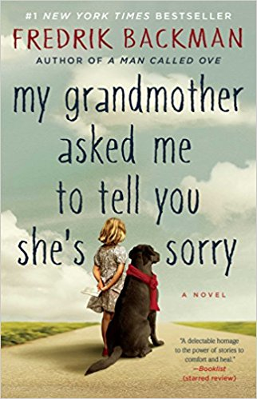

I enjoy reading in my free time. I love to hear stories about people from all different places, in this world and in others. Whether they are real or not, if it has some sort of emotional expression and a somewhat happy ending, I'm happy. So if you find youself just wandering for a new book to read, check out my list below!

Author: Fredrik Backman
Recommended Age: 14+
This book is my new all-time favorite! Set in Sweden, the home country of this author, a disgruntled middle-aged man lives alone, shaped by the sad events of his past. When a new family moves in nextdoor, they, along with other members of his community, help save Ove from the depths of depression. This book shows how Ove's past has transformed him into a grumpy old man, and the qualities of his personality that have been covered up by the tragedies which haunt his past. The relationships between the characters in this book are so real and, because it is set in present day, the personalities and situations which Ove encounters are the kinds that we are likely to encounter in our own societies today. Plus, the backstory of Ove's childhood really pulls on the hearstrings, but at the same it can apply to many different people, including myself. I cannot recommend this book enough. It is just an absolutely incredible story. Take the time to read it and you'll find yourself relating to the characters in all kinds of ways, possibly finding a new perspective along the way.
Author: Fredrik Backman
Recommended Age: 8+
This second Fredrick Backman novel is an emotional story about a young girl, Elsa, and her grandmother, who constantly tells her stories about a magical land where all dreams and imagination come from. After her grandmother passes away, Elsa is sent on a quest to deliver messages to people who her grandmother felt she had wronged. Through this experience, Elsa grows closer to her mother and the people in their apartment building, learning how they are all connected because of the effect Elsa's grandmother had on their lives. This story is a great read for anyone who, like me, loves to remember the fantasies and dreams that we had when we were little kids. Just like in Backman's other books, the emotional connections between these characters are so well expressed that they are almost tangible. The way they are all connected through the memory of Elsa's grandmother is incredibly genuine and unlike any common feeling. As you read, you'll find yourself beginning to care about these characters and maybe even feel an emotional connection to them, even though they are all fictional. This is how strong Backman's writing style is, and I can guarantee that you will enjoy every minute spent reading this book!

Author: Christina Forrester Recommended Age: 10+
I read this novel for the first time in the 6th grade, and absolutely loved it. It's about this girl who was born with the ability to fly. The novel describes her strruggles with concealing this extremely unusual talent, and, once it is revealed to the public, her experience in a private school for children with extraordinary abilities like hers. Unfortunately, she later discovers that the facility she attends is not what she thouught it was. As she attempts to escape with her friends, they battle with security guards and the school's "principal", eventually getting the main character, Piper, in serious danger. After seeing what the adults do to Piper, the other kids band together to help her escape, an effort that poses serious risks for the rest of them should they fail. Personally, I am a huge fan of fantasy, especilly normal people with incredible abililtes. However, I also love stories about places that turn out to be something completely different than what your first believed, so, basically, this book is right up my alley. If you're the type of person who enjoys fantasy along with a classic good-guy/bad-guy conflict, then you should enjoy this book as much as I do.